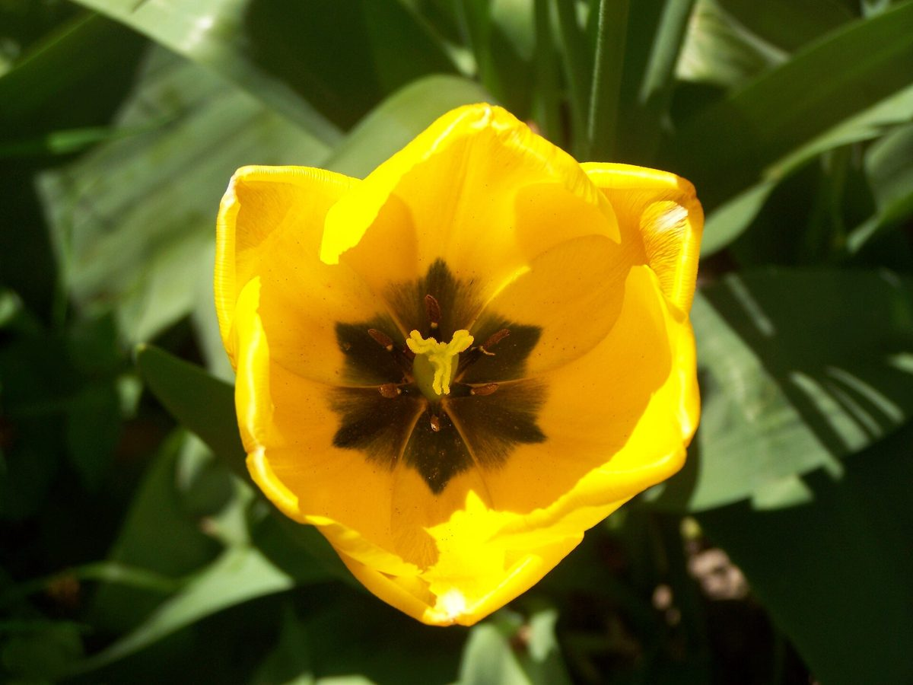
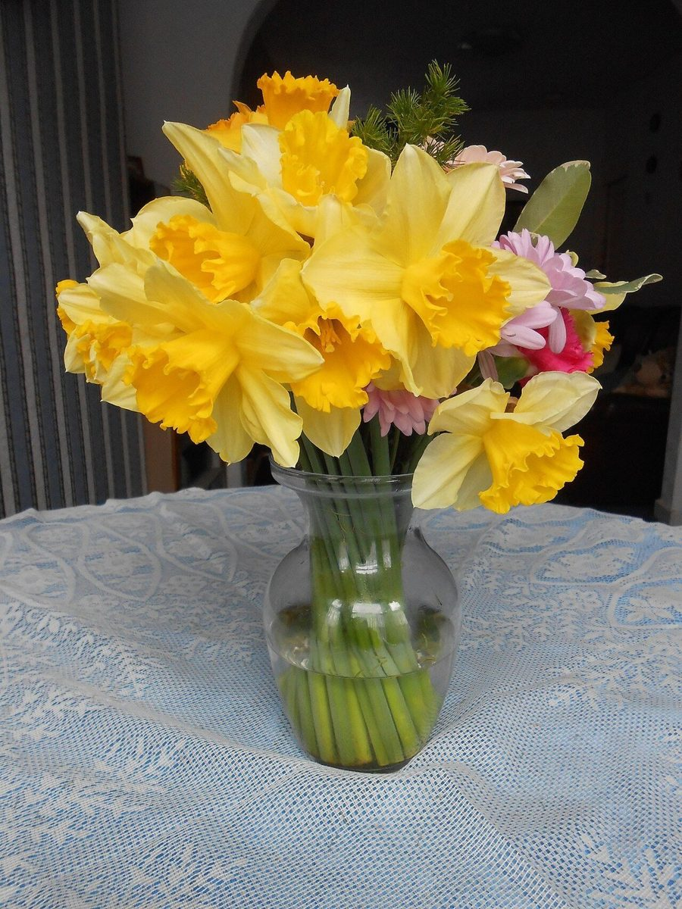
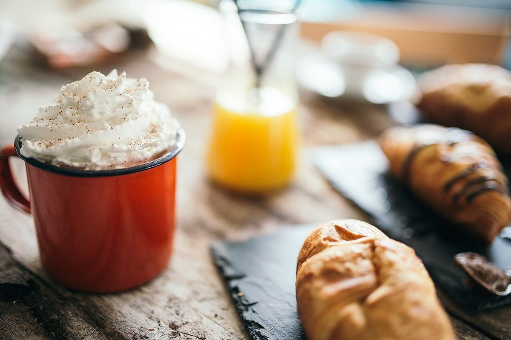
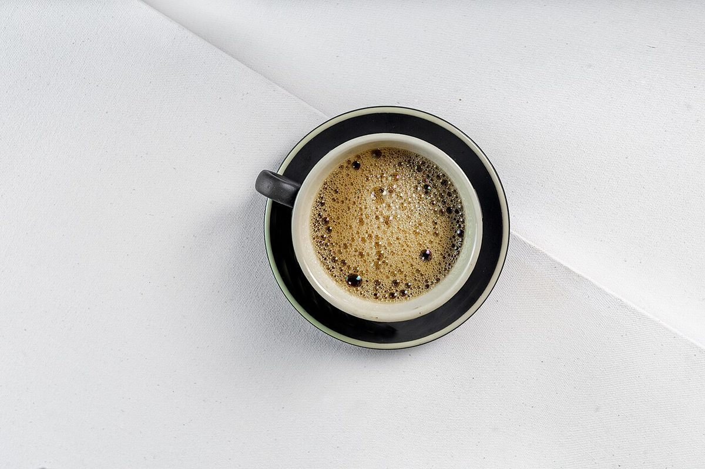
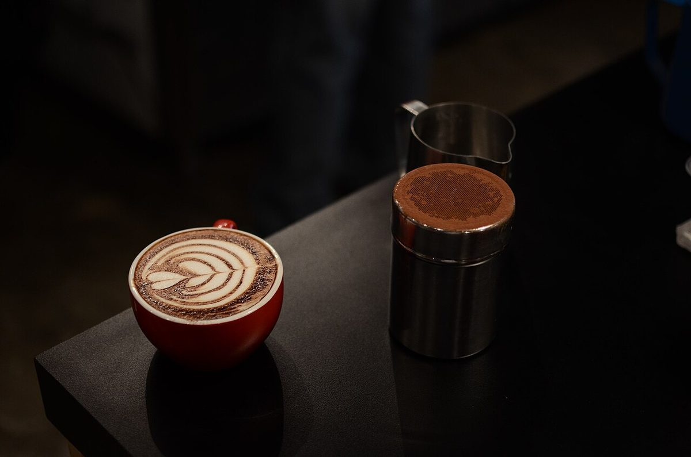

カフェ / 秋田県にかほ市
LA
cachette花花
秋田県にかほ市のカフェ「cafe LA cachette 花花」のご案内ページです。営業時間やメニューなど、詳しいことは準備中。まずはInstagramをのぞいてみてください。

制作側の連想
伏せ札と、ふたつ並ぶ「花」
これは制作側の連想で、お店の理念・由来とは無関係です。店名の「cachette」はフランス語で「隠し場所」を意味する言葉だと制作側は受け取りました。「花花」は同じ字が2つ並んでいます。そこから、裏返しの札をめくって同じ組を探す「神経衰弱」を連想し、このサイトを「伏せ札」と「ペア」で組み立てました。写真の「花」と「カップ」を色で組にしています。
神経衰弱の盤
七色の組を探す。
札にカーソルを乗せる(スマホはタップ)と表がのぞけます。写真は国外・撮影地不明のフリー素材で、お店のものではありません。花の札と、カップや器の札が1組です。
- 黄?

- 青?

- 白?

- 乳白?

- 橙?
- 山吹と紫?

- 黄?

- 赤?

- 青?

- 白?

- 橙?

- 山吹と紫?

ご案内
お店のこと(確認できたものだけ)
| 所在地 | 〒018-0311 秋田県にかほ市金浦金浦108-1 |
|---|---|
| 電話 | 0184-44-8318 |
| 営業時間 | 準備中 |
| 定休日 | 準備中 |
| ご予約 | 準備中 |
| 駐車場 | 準備中 |
| SNS | Instagram @cachette8787 |